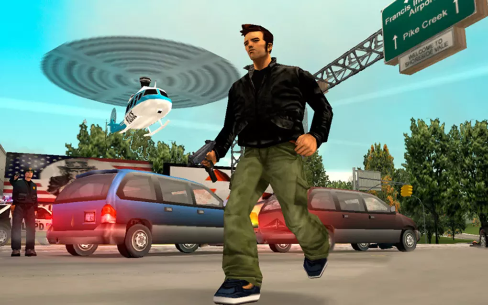
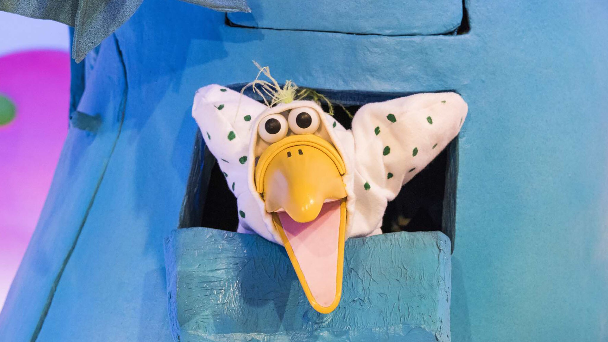

My Greatest Hack: How I Flew Over The Dodo's Nest
Posted on Sat, 2020-05-02 in misc
This is a story about my childhood.
Somewhere after 2001, the year Grand Theft Auto III was released, my eldest brother brought home a copy of the game for the PC. At that time we were sharing a family desktop machine that our parents bought for us, splitting the time using the famous your brother is two meters tall and can kick your ass scheduling algorithm. It is also known as the completely unfair scheduling algorithm in Computer Science circles.

We got to know the GTA series one boring evening having dinner with family friends at a pizzeria somewhere in the deep north-east of Italy. The son of the owner, who we did not know, was playing this fun-looking game on his PlayStation and we went to sit next to him until we had to go home. Needless to say, that game was GTA II and we ended up borrowing it from someone the following days.
Now, I was not your typical player.
I didn't care much for missions and following the game's story: I just wanted to lie, cheat, steal. When, reading a gaming magazine, I discovered that you could change the vehicles' physics by modifying nyc.gci, all hell broke lose: young babush found himself spending entire afternoons creating cars that could cross the entire map in the blink of an eye, wondering why the police car was still faster than him.
Of course I also cheated normally. GOURANGA all the way baby. Actually, I don't think I've ever played GTA II without cheats.
But let's get back on track: GTA III. My average gaming session was more or less this:
- Load my brother's savegame
- Insert whatever-cheat-code-for-tanks-and-big-guns
- Go on a killing spree
- Get bored of killing
prostitutessex workers - Get bored of killing policemen and soldiers
- Start roaming around doing random stuff
Now, for the reader unfamiliar with GTA III's map, here it is in all of its beauty:

The game started in the island on the right and in order to reach the second one you needed to finish some missions. But I didn't want the game to rule what I was supposed to do. So I started thinking how I could skip the missions and reach the second island directly.
The artificial barrier that was blocking me was a broken bridge. I tried several times to cross it by jumping, driving fast, praying to the Rockstar Gods, but the bridge was stronger than me and resisted all my attempts. In the end I admitted defeat.
Babush 0 - Bridge 1
Bummer, I know, but bear with me. This is only the beginning...
The Dodo
 (Stupid childhood throwback for Italian readers)
At this point I was too bored of the game and couldn't be bothered playing it anymore, but something happened... Reading another issue of the aforementioned game magazine, I discovered that in the third island you could find the only plane in GTA III.
Let me repeat.
In the game there was an airplane.
You could fly it.
It was the only one.
It was on the third (and last) island.
...And my brother had a savegame in the second island.
Somehow it was a first-island bridge situation all over again. This time my enemy was a lift bridge that was up all the time you tried to cross it (if I recall correctly). It might be obvious for native speakers, but a lift bridge is this kind of bridge:

It was clear I was going to fail again if I pursued the same strategies I used earlier. But, as the famous quote goes, "if you don't know how to cross an uncrossable bridge, always account for variable change". And from the first island to the second island there was a significant variable change: motherfucking boats.
I'll begin by giving credit where credit is due: Rockstar developers were far ahead of their time. They built the wall and made the players pay for it. Literally. Way before it was cool. But if there's something that dangerous illegal mexican immigrants taught the world is that a bunch of bricks can't stop narcos and other nice people-alike from delivering their products to the Land of the Free. Well the flag of my Country is pretty similar to the Mexican one if you remove the funny logo in the middle, and my mother tongue is close too, so I said to myself vamos a cruzar ese puto puente, ese. However, the game did not allow for digging tunnels nor bribing the invisible officers of the invisible wall. Flying was out of question too given that I was doing all of this specifically to reach the only plane in the game. According to the my magazine there were no submarines either.
Let's think for a moment about them boats. They can't cross an invisible wall, can they? But young el babusho quickly found of that he could drive them onto the land given enough speed. For sure a boat would get damage if a car pushed it over a road, right? Nope. No damage.
I had a plan.
I took a boat, drove it on the grass somewhere near the invisible barrier, then took the biggest truck I could find and started pushing the boat on the street next to the border. The boat was moving super slow. I think in total it took me more than one hour to travel enough to reach the shore on the other side of the island. But in the ended I did it. After putting the boat in the water on the other side of the fence, all I had to do was jump in it, go to the third Island, save the game and go for my sweet sweet ride on the Dodo.
Now, as any GTA III player knows, the Dodo is almost impossible to fly, to the point that people created tutorials on YouTube to explain how to control it. But I was happy anyway.
...and this is the end of the mildly entertaining story of how I hacked Grand Theft Auto III.
The End
If you read everything until this point you must be out of your mind. Anyway thanks for reading what I truly believe to be my best hack ever. This gave me more satisfaction than any CTF or CVE could ever give me, in part because it was totally for the lulz (and maybe because it didn't require me to waste two nights of sleep for bro points).
Next time maybe I'll talk about the Start Menu bug in Pokemon Red and Blue, and how I used it to remove Snorlax from the street without ever getting the Poké Flute.
Cheers,
babush